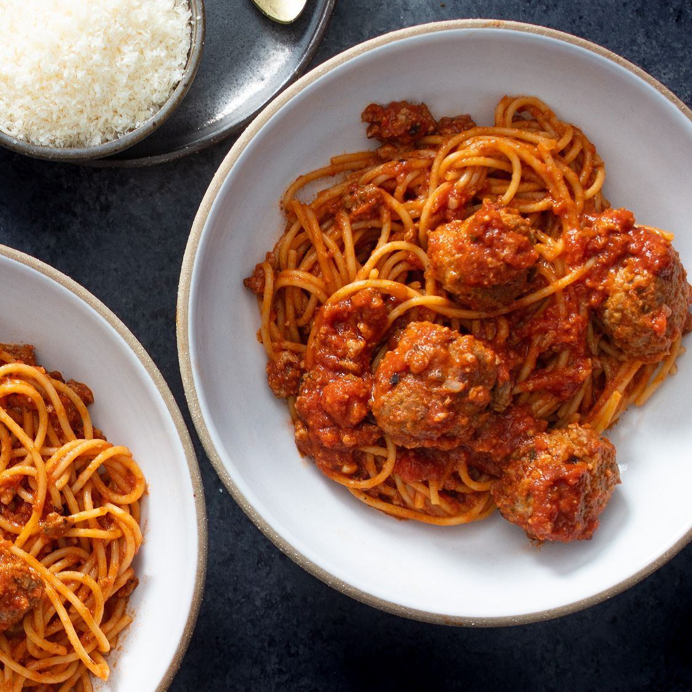

Spaghetti

Description
Spaghetti is dope. I like spaghetti a lot, but if it doesnt have meatballs in it were gonna have an issue. But nonetheless, a nice spaghetti and meatballs is one of the finest things you can put on a plate. It is also very easy to make, so it is the perfect meal to for the whole family.
Ingredients
- 1 pound ground beef
- 1 onion
- 4 cloves garlic
- 1 can diced tomatoes
- 1 can tomato sauce
- 1 can tomato paste
- Italian herbs
Steps
- Combine ground beef, onion, and garlic in a large sacuepan. Cook and stir until meat is brown and vegetables are tender.
- Stir diced tomatoes, tomato sauce, and tomato paste into the pan. Season with herbs, salt, and pepper. Simmer spaghetti sauce for 1 hour, stirring occasionally.